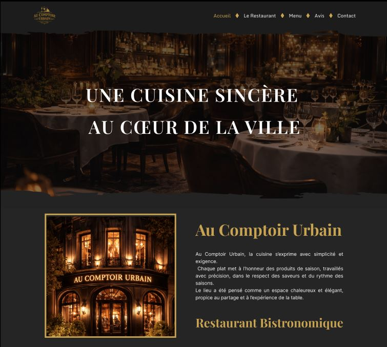
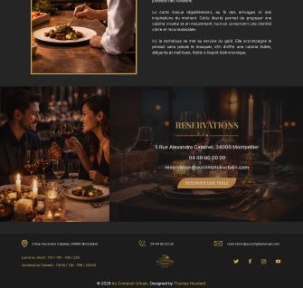
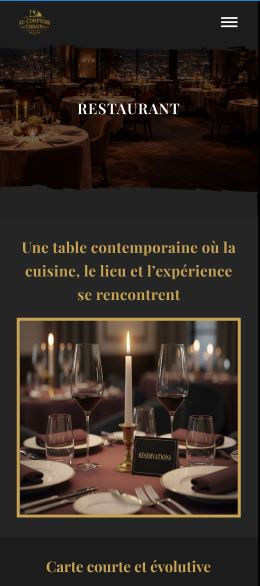
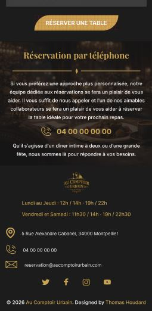

UX/UI DESIGN
Figma
Direction artistique, design system, composants et maquettes du site restaurant.
Étude de cas · Direction artistique · UI/UX Design
Direction artistique et design d'identité visuelle pour Au Comptoir Urbain, restaurant gastronomique haut de gamme. Objectif : créer une identité raffinée, premium et mémorable reflétant l'excellence culinaire.
Travail réalisé : direction artistique, palette couleur et typographie, système de design, design UI/UX et intégration du site du restaurant.
Aperçu de l'identité visuelle

Au Comptoir Urbain, restaurant gastronomique de luxe, avait besoin d'une identité visuelle distinctive et premium. Nécessité de communiquer l'excellence, la raffinement et la singularité de l'établissement.
Immersion dans l'univers du restaurant : ambiance, cuisine, clientèle. Définition du positionnement : luxury, gastronomique, urbain et raffiné. Construction d'une identité mémorable et distinctive.
Palette minimaliste et élégante : or, noir, blanc avec accents naturels. Typographie premium, imagerie raffinée et mise en page aérée pour exprimer le luxe discret.
Un restaurant gastronomique haut de gamme a besoin d'une identité qui communique le prestige sans tomber dans le déjà-vu.
Une palette minimaliste (or, noir, blanc, terracotta), une typographie premium et une photographie culinaire soignée pour exprimer un luxe discret.
Rassurer une clientèle exigeante dès l'arrivée sur le site tout en facilitant l'accès à la réservation.
Une hiérarchie claire mettant en avant les visuels du restaurant, avec un accès direct et visible aux informations de réservation.
Logo épuré combinant des éléments géométriques et organiques, décliné en version couleur et monochrome sur l'ensemble du site.
Hiérarchie typographique claire et élégante. Serif pour les titres (prestige), sans-serif pour le corps de texte (lisibilité). Espacements généreux et équilibrage visuel premium.
Harmonie minimaliste avec profondeur. Couleurs primaires et accessoires utilisées stratégiquement pour créer raffinement et distinction.
Système modulaire cohérent : boutons, cartes, formulaires, éléments interactifs. Chaque composant conçu pour excellence et cohérence brand.
Une identité visuelle cohérente et un site web premium reflétant le prestige et l'excellence de Au Comptoir Urbain, avec une direction artistique appliquée à l'ensemble des pages, desktop et mobile.



UX/UI DESIGN
Figma
Direction artistique, design system, composants et maquettes du site restaurant.

HTML, CSS, JavaScript
Visual Studio Code
Structure sémantique et organisation claire des sections.